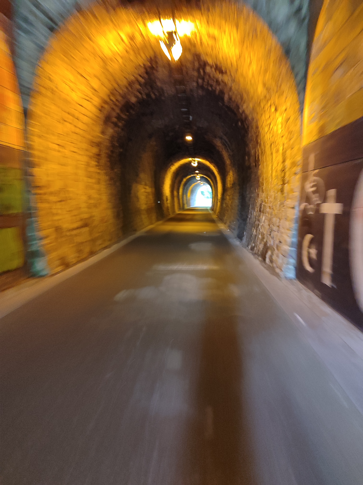

Mit dem Rad
Auch mit dem Fahrrad kann man einiges sehen. So gibt es neben der längeren Routen an den Flüssen wie dem Ruhrtalweg, dem Erftradweg der Neffelbach-Tälerroute auch kurze Radwege rund um Wuppertal. Die Wege sind in der Karte mit rot gekennzeichnet.
Die Vennbahntrasse
Einer alten Bahntrasse folgt die Route von Aachen immer bergauf bis nach Luxemburg. Unterwegs fährt man durch Dichte Waldgebiete, kann Café in alten Zugwaggons trinken oder die weiten Blicke über die Eifel genießen.
Die Sambatrasse
Wer anspruchsvoll fahren will und trotzdem nicht weit will findet bei Wuppertal diese Route. Von Vohwinkel aus geht es über der Wuppertaler Zoo (für lau) durch den Burgholz als Schwarzwald des Bergischen Landes bis nach Cronenberg hoch.
Die Nordbahntrasse
Neben der Schwebebahn wohl eines der Aushängeschilder der Stadt Wuppertal. Von den eigenen Bürgern vorgeschlagen und teilfinanziert ist diese Trasse beeindruckend. Ob alte Bahnhöfe als Biergärten oder Outdoorgyms oder Viadukte und Brücken aus Aussichtspunkte auf das Wuppertal. Einfach wow!

Die Balkantrasse
HHoch oben von Lennep bei Remscheid führt diese alte Trasse immer runter ins rheinische Tiefland bis Leverkusen Opladen. Kleinere Städte wie Wipperfürth oder die weiten Wiesenlandschaften gefallen.
Die Korkenziehertrasse
Neben Wuppertal wollte auch Solingen eine Fahrradtrasse. So kam die Korkenziehertrasse. Sie führt von Haan bis nach Solingen Wald. Einst mit Waggoncafé und viel Geschichtserklärungen geplant ist sie ein wenig eingeschlafen.
Die Niederbergbahn
Von Haan aus führt diese Trasse durch das Niederbergische, neuerdings auch Neanderland genannt, und endet in Essen Kettwig. Unterwegs wird viel erklärt und alte Industriegeschichte dargestellt.

Der Erftradweg
Von der Quelle in den Höhen der Eifel runter bis zur Mündung bei Neuss. Unterwegs erlebt man viel über die überraschende Kultur am Fluss, Wasserburgen, Renaturierungsprojekten und Altstädten.
Die Neffelbach-Tälerroute
EEin Radweg, der wohl wenig Aufmerksamkeit in den letzten Jahren bekommen hat. Zumindest wirken die Schilder zum Teil in die Jahre gekommen. Ob Geschichten vom einstigen Weinanbau am Neffelbach oder Blicken in die Bördelandschaft zwischen Eifel und Rheinland, ein schönes Mikroabenteuer.